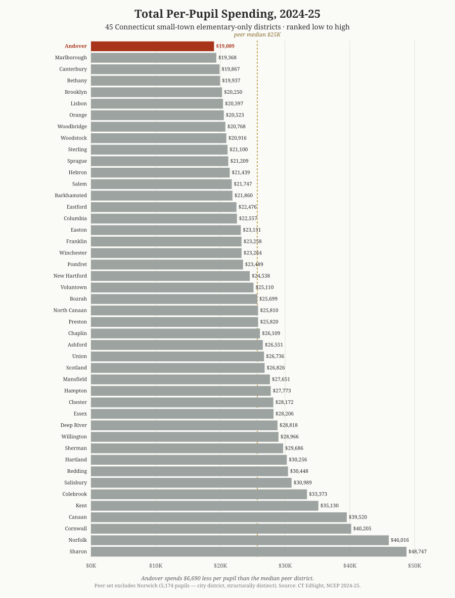
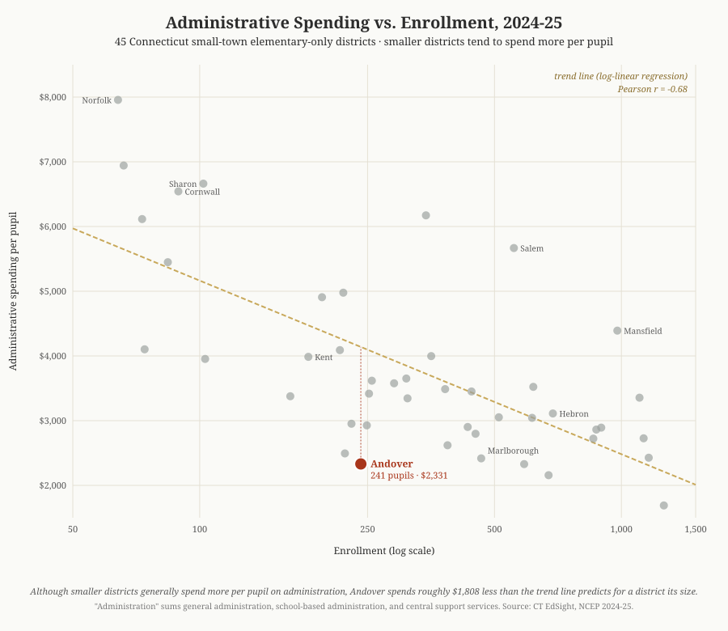
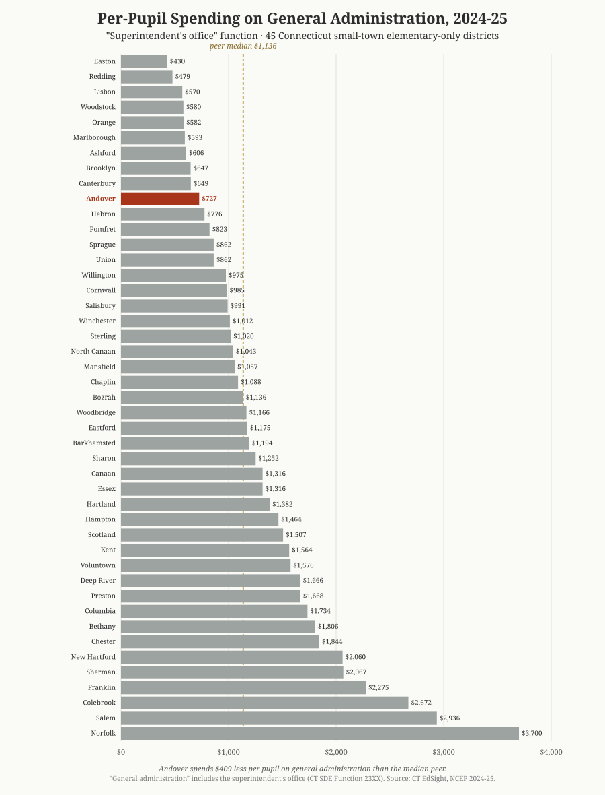

Town of Andover, CT · A Comparison Across 45 Connecticut Small-Town Districts · Per-pupil spending and administrative costs, school year 2024–25
A personal report by Scott Sauyet · scott@sauyet.com · Not an official town document
This report compares the Andover Elementary School (AES) district’s per-pupil spending against the 44 other Connecticut public school districts that share its structural profile: small-town elementary-only districts (K–6 or K–8, enrollment under 2,000) that send middle- and high-school students to a regional district or by tuition contract. The Connecticut State Department of Education’s directory shows one additional district matching the basic structural criterion — Norwich, with 5,174 students — but it is a city district operating multiple schools and serving an urban-poverty population that differs in kind, not just degree, from the small-town districts that populate the rest of the peer set. It has been excluded with a note in Part 1 explaining the choice. All data is drawn directly from the Connecticut State Department of Education’s EdSight portal — specifically the Per Pupil Expenditures by Function (District) report for school year 2024–25 — and from the CSDE Education Directory used to identify the peer set. The report was prompted by a community discussion about superintendent compensation; the available public data does not let that specific question be answered cleanly, but it does let the broader question — “how does Andover’s administrative spending compare to its peers?” — be answered very cleanly indeed. The answer is at the bottom of the rankings on essentially every measure.
Introduction
A discussion has been underway in Andover about the salary and compensation of the AES superintendent, with concerns raised that the new contract represents a significant raise. The natural way to evaluate that concern is to compare Andover’s superintendent compensation to that of similarly-structured Connecticut districts.
That comparison turns out to be hard to make from public sources alone. Individual superintendent contracts are public records under Connecticut FOIA but are not collected in a single state-published dataset. They live, instead, on each district’s website (when posted at all) — sometimes as a current contract, sometimes only as a board-meeting agenda item, sometimes as a scanned PDF that resists searching. Building a defensible 45-district comparison of superintendent compensation from primary sources is a project of weeks, not days.
What is published in a single consistent dataset is district-level expenditure data, broken out by function — and what that dataset shows, for Andover, is striking enough to be worth establishing up front. The findings at a glance:
A note on these figures. Unlike per-pupil figures in some other reports — including earlier reports on this site — the CT EdSight NCEP convention includes preschool pupils in the denominator. Forty-two of the 45 districts compared also include preschool; the comparisons are consistent. Part 4 walks through why this convention, if anything, makes Andover look slightly more favorable rather than less.
| Question | Answer |
|---|---|
| How does Andover’s total per-pupil spending compare to peer districts? | Andover ranks #1 of 45 (lowest). $19,009 per pupil vs $25,699 peer median. |
| How does Andover’s spending on the superintendent’s office compare to peer districts? | Andover ranks #10 of 45 (lower spending = lower rank). $727 per pupil vs $1,136 peer median. 80% of peers spend more. |
| How does Andover’s combined administrative spending compare? | Andover ranks #4 of 45. $2,331 per pupil vs $3,417 peer median. 93% of peers spend more. |
| What does this say about superintendent compensation specifically? | It’s strongly consistent with — though does not by itself prove — superintendent compensation in line with or below peers. |
| Does the preschool program distort the comparison? | No. The program is approximately revenue-neutral to the town; inclusion has a small effect that favors Andover slightly. |
| Where is the underlying data published? | CT EdSight, Per Pupil Expenditures by Function (District), school year 2024–25. |
The rest of the report explains the peer set, walks through the spending findings in detail, addresses the most likely methodological objection (the preschool question), and is explicit about what the available data can and cannot tell us about superintendent compensation specifically.
The Connecticut State Department of Education’s EdSight portal publishes, for every district, per-pupil expenditures across nine standard function categories — instruction, support services, administration, transportation, and so on. Within “support services,” there are three sub-functions that together capture essentially all administrative spending: general administration (the superintendent’s office), school-based administration (the principal’s office), and central and other support services (business office, technology, central support staff).
These per-pupil administrative figures are not the same as superintendent compensation. They include the salaries and benefits of every administrator the district employs, plus office costs, dues, travel, contracted services, and similar overhead. But they answer a closely related question: is the district’s administrative footprint, taken as a whole, large or small relative to peer districts? If a superintendent’s compensation were truly out of line with peer norms, it would tend to push that district’s administrative spending upward relative to peers. If a district’s administrative spending sits at or below peer norms, that is at least consistent with — though does not by itself prove — superintendent compensation that is not out of line with peers either.
This report presents the comparison. It is organized as follows:
Peer set
The Connecticut State Department of Education’s Education Directory lists every public school in the state, broken out by the grades each school serves. Filtering for “elementary-only” districts — districts that operate K–6 or K–8 schools but do not run a high school — yields 46 districts, including Andover. One of those districts, Norwich, has been excluded from the peer comparison in this report; the reasoning is explained below. The remaining 45 districts (44 peers plus Andover) form the peer set used throughout the rest of the report.
All 45 districts share the structural pattern that Andover voters know well: a local board of education runs an elementary program through grade 6 or grade 8, and middle- and high-school students attend either a regional district (like Andover sending to RHAM for grades 7–12) or another town’s high school by tuition contract (like Columbia sending to Windham). The peer set crosses both of these arrangements. It excludes K–12 unified town districts (which spread administrative overhead across thirteen grade levels rather than seven or nine) and excludes unified PreK–12 regional districts (where member towns have no separate elementary board of education).
The peer set was identified from the Connecticut State Department of Education’s Education Directory, a public dataset published on data.ct.gov that lists every public school in Connecticut along with the grades each school serves. Districts qualifying as peers had to satisfy three criteria:
The first two criteria were applied programmatically against the full Education Directory dataset. The third criterion eliminated one district: Norwich, at 5,174 pupils. The remaining 45 districts are structurally consistent: every district runs only elementary grades locally, every district sends older students elsewhere for secondary education, and every district is operating at a small-town scale.
Norwich at 5,174 pupils is more than four times the size of the next-largest district in the structural set (Orange, at 1,261 pupils), and more than fourteen times the size of the median small-town district. It is operationally a city district — it runs nine schools, serves a substantially higher-poverty student population than the small-town peers, and operates inside a city-budget framework that differs from the town-meeting and referendum budget process common to the 45 small-town districts. While Norwich does share the basic structural feature of the rest of the set (K–8 only, sending high schoolers to Norwich Free Academy), including it in a peer comparison would distort both the central-tendency statistics and the regression analyses without providing useful comparative information for Andover. The underlying EdSight data for Norwich is freely accessible to readers who want to include it; this report’s analysis simply uses a tighter peer set.
The full peer set, formatted as District (grades, enrollment):
Notes: Enrollment figures are the “Pupils” count reported in the CT EdSight Per Pupil Expenditures by Function (District) report for school year 2024–25, basis 1 (enrollment plus outplaced pupils). The 45 districts include Andover. The seven smallest districts (Norfolk, Colebrook, Canaan, Union, Hampton, Cornwall, and Sharon) each enroll under 110 students and are exposed to high per-pupil costs because of the fixed-cost structure of schooling — administrative and special-education overhead is largely the same whether spread across 60 students or 600. The median peer district enrolls 344 students; Andover, at 241, is below the median but well above the bottom of the range.
Total spending
The headline finding is straightforward: Andover spends less per pupil than any of the other 44 districts in its peer set. Of all 45 districts, Andover ranks first — that is, lowest — on total per-pupil expenditure. The figure is $19,009 per pupil in 2024–25. The median peer district spends $25,699 per pupil, $6,690 more than Andover.
The chart below shows total per-pupil expenditure for all 45 districts, ranked from lowest (Andover, at top) to highest (Sharon, at bottom). The peer median is shown as a dashed gold line.

Notes: Total per-pupil expenditure is the sum of all functional spending categories reported to EdSight (instruction, support services, operations and maintenance, transportation, food services, and enterprise operations) divided by enrollment plus outplaced pupils. The figure excludes certain capital spending, debt service, adult education, community services, and state contributions to the Teachers’ Retirement System (these exclusions are uniform across all 45 districts, so they don’t affect the ranking). Source: CT EdSight, Per Pupil Expenditures by Function (District), school year 2024–25.
A few summary statistics:
Multiplying the median gap by Andover’s 241 students: if Andover spent at the peer median rate, the district’s total spending would be approximately $1.61 million higher per year than it currently is.
This finding is robust to several plausible adjustments. Excluding the eight smallest districts (those under 110 students, which face the highest per-pupil costs because of the fixed-cost structure of schooling) lowers the peer median to $23,264 — still $4,255 above Andover’s $19,009. Andover is the lowest-spending district per pupil in its peer set under every reasonable filter.
A reasonable objection to the ranking above: “Andover has 241 students, smaller than the median peer district. Smaller districts tend to spend more per pupil because of fixed costs spread across fewer students. So Andover’s low spending might reflect something specific to its size rather than to anything Andover is doing right.”
The first half of that objection is correct: across the 45 districts in this peer set, smaller districts do tend to spend more per pupil. The Spearman rank correlation between enrollment and total per-pupil spending is ρ = −0.63 (and ρ = −0.64 for administrative spending specifically) — a strong negative relationship. The pattern is clearest in administrative spending — where a district must staff a central office, a principal, and basic support functions regardless of how many students it serves — and weakest in instruction, where teacher counts scale roughly with student counts.
The second half of the objection doesn’t hold, because Andover is on the smaller end of the peer set. At 241 students, Andover is below the peer median of 344. If size were the explanation for Andover’s low spending, Andover should be on the higher end of the spending distribution — not the lowest.
The chart below plots enrollment against combined administrative spending across all 45 districts in the peer set, using a log scale for enrollment to make the small-to-large range readable. The dashed gold line is a log-linear regression — the smooth shape that best fits the actual data pattern, where per-pupil spending falls quickly as district size grows in the smallest ranges and flattens out among mid-size and larger districts.

The regression predicts that a 241-student district should spend approximately $4,140 per pupil on administration. Andover spends $2,331 — roughly $1,800 below what its size would predict. Andover isn’t just lower than the median; it’s substantially lower than what the size-adjusted expectation would be. The leanness of Andover’s administrative spending is not a size effect.
Part 3 — Administrative spending: the supe-office, principal, and central
Total spending answers the broad question. The narrower question — the one that prompted this report — is about administrative spending specifically. The EdSight report breaks administrative spending into three function categories:
Each of these is reported by EdSight on both a total-dollar and per-pupil basis. The per-pupil basis is the right one for cross-district comparison because it normalizes for district size.
Andover spends $727 per pupil on general administration. The peer median is $1,136 per pupil. Andover ranks #10 of 45 — meaning 35 of the 44 peer districts (80%) spend more per pupil on general administration than Andover does.

Notes: General administration is CSDE Function 23XX. It captures spending on the superintendent’s office: superintendent compensation, secretarial and clerical support to the superintendent, central board of education expenses, district legal services, and similar overhead. It does not include school-based administration (principals — see next section) or district-wide support services (business office, IT — see following section). For Andover, the general administration line is $173,815 in 2024–25; divided by the 239 enrolled pupils (the denominator basis for support-services functions) yields $727 per pupil. Source: CT EdSight, Per Pupil Expenditures by Function (District), school year 2024–25.
Andover spends $1,018 per pupil on school-based administration — the principal’s office. The peer median is $1,443. Andover ranks #4 of 45, meaning 40 of the 44 peer districts (91%) spend more per pupil here than Andover.
The school-based administration line tends to scale with the number of schools a district operates: a district with three elementary buildings will have higher school-based administrative spending per pupil than a single-building district like Andover. Twenty-nine of the 45 districts in this peer set operate a single school, like Andover; the rest operate two or more. Among the single-school subset, Andover’s $1,018 per pupil is still well below the subset median.
Andover spends $586 per pupil on central and other support services. The peer median is $672. Andover ranks #18 of 45 — closer to the middle of the distribution than on the other two administrative lines, but still on the leaner side. Twenty-five of the 44 peers (57%) spend more per pupil here than Andover.
Adding the three administrative lines together gives a total administrative footprint per pupil:
| Administrative function | Andover PPE | Peer median PPE | Rank |
|---|---|---|---|
| Support services — general administration | $727 | $1,136 | #10 of 45 |
| Support services — school-based admin | $1,018 | $1,443 | #4 of 45 |
| Central and other support services | $586 | $672 | #18 of 45 |
| All three administrative lines combined | $2,331 | $3,417 | #4 of 45 |
Notes: Per-pupil expenditures are as reported by CT EdSight for school year 2024–25. The “all three lines combined” row sums the per-pupil figures across the three functions; this corresponds approximately to a district’s total administrative spending per pupil, though it omits a small amount of administrative spending classified under other functions (notably benefits, which CSDE charges to district-wide accounts rather than to specific functions). Rank #4 of 45 means three peer districts spend less per pupil on administration than Andover does (Orange, Canterbury, and Lisbon). On school-based administration and central support services, one peer district reports $0 in each of those specific sub-functions — almost certainly a reporting-classification choice rather than truly zero spending; for ranking purposes those districts have been treated as the lowest spenders on the relevant line. Source: CT EdSight, Per Pupil Expenditures by Function (District), school year 2024–25.
The combined administrative spending finding — Andover #4 of 45, with the great majority of peers spending more — is the most directly relevant to the original concern about superintendent compensation. If a district’s superintendent compensation were significantly out of line with peer norms, the natural place for that to show up would be in the general administration line and in the combined administrative footprint. Andover’s administrative footprint is among the leanest in the peer set, which is at least consistent with superintendent compensation that is in line with — and most likely below — peer norms.
Preschool
A reader familiar with the AES preschool program may wonder whether the preschool inflates the comparison: Andover’s per-pupil counts include preschoolers, and if preschool is unusually well-funded or unusually low-cost, the inclusion could distort the picture. The short answer is no: the preschool inclusion doesn’t materially affect the comparison, and to the extent it has any effect, it makes Andover’s position slightly more favorable, not less.
Three points support this.
The AES preschool program operates from the district’s School Grants Fund, a separate accounting fund from the General Fund that holds K–6 instructional spending. The preschool’s eight staff are paid from the School Grants Fund, which is populated by tuition revenue and by two Office of Early Childhood grants (Smart Start at $65,000/year and Early Start at $123,000/year). When the program’s revenues and expenditures are netted out, the program is approximately revenue-neutral to the town at the program level — the modest residual cost runs through district-wide employee benefits accounts that are not preschool-specific.
This is the subject of a detailed companion analysis, andoverct.info/reports/aes/preschool-funding/. The AES superintendent has reviewed that analysis and noted that the original estimates were, if anything, conservative — the program’s actual financial position relative to the town is at least as favorable as the report shows, and likely somewhat more so. She is constrained by HIPAA and FERPA from publishing a precise total for program-allocated benefits, but has indicated that a fully-loaded figure would strengthen rather than weaken the case the companion analysis makes. The headline finding from that analysis: the program’s direct net subsidy to the town is approximately $92,000 per year on a fully-loaded basis, which is then more than offset by an estimated $200,000 in avoided special-education compliance costs (the town would otherwise be required to provide preschool special-education services either by outplacing children to private programs or by operating a small standalone special-education classroom). On net, the program is estimated to save the town approximately $108,000 per year rather than to cost it anything.
Forty-two of the 45 districts in this peer set operate a preschool program; the CSDE Education Directory lists them with “PK” as their lowest grade. The CT EdSight per-pupil expenditure report counts all pupils — including preschoolers — in both numerator and denominator. So the same preschool effect applies to nearly every peer in the comparison. The three districts that do not operate preschool programs (Canaan, Colebrook, and Cornwall) are all among the smallest in the peer set, with enrollments well under 100 pupils, and their inclusion does not change the overall pattern. The Andover-to-peer comparison is broadly apples-to-apples on the preschool question.
Since the AES preschool program is approximately revenue-neutral to the town — that is, tuition and grants cover essentially all of its operating cost — including preschool pupils in the denominator while only partially loading their cost into the numerator has the effect of lowering Andover’s per-pupil figure relative to a K–6-only comparison. In other words: if we excluded preschool from the calculation, Andover’s per-K-6-pupil spending would be slightly higher than the $19,009 figure shown here. Andover would still rank lowest among peers (the gap to the next-lowest district, Marlborough at $19,368, is small enough that it would persist under most reasonable adjustments), but the dramatic gap to the peer median would narrow somewhat.
This is, importantly, a good fact for Andover, not a bad one. Including preschool in the count makes Andover look slightly more efficient than it would otherwise; the underlying K–6 spending is, if anything, marginally higher than this comparison shows. The preschool inclusion is not padding Andover’s denominator with cheap pupils to make the district look lean; it is correctly reflecting a program that is approximately self-funding within the school district’s overall accounts.
Part 5 — What this comparison can and cannot tell us about superintendent
The original concern that prompted this report was about superintendent compensation specifically: the AES superintendent’s new contract represents a significant raise, and a discussion has been underway about whether that compensation is in line with peer norms. This report does not directly answer that question, for a reason worth being explicit about.
Connecticut superintendent contracts are public records. Under Connecticut FOIA (Conn. Gen. Stat. § 1-200 et seq.), any resident can request a copy of the superintendent’s contract from any school district in the state. Most districts post the current superintendent’s contract on the district website voluntarily, typically under “Agreements” or “Personnel” or “Board of Education” sections. AES does so; so does Hebron; so do many other districts.
But there is no single state-published dataset that aggregates these contracts into a comparable form. The Connecticut Association of Public School Superintendents (CAPSS) runs an annual member salary survey, but the full survey is for members only; summary statistics are published in aggregate form that may not isolate the relevant peer subset. The Connecticut State Department of Education collects district financial data through the Education Financial System (EFS) that feeds EdSight, but the per-pupil expenditure reports — including the report this analysis is based on — aggregate administrator compensation into function-level totals, not by individual position.
Building a defensible 45-district comparison of superintendent compensation specifically is therefore a project that requires either reading 45 individual contracts (some of which require contacting district offices individually when no contract is posted online), or filing a coordinated set of FOIA requests, or paying for access to a commercial dataset that may not exist for this specific peer set. None of those is a project that fits in the timeframe of this report.
What this report does answer is the broader question: is Andover’s administrative footprint, taken as a whole, large or small relative to its peers? The answer is: small. Andover ranks #10 of 45 on general administration (the superintendent’s-office function), #4 of 45 on school-based administration, and #4 of 45 on the three administrative lines combined. By every measure the state’s published data supports, Andover spends less per pupil on administration than the great majority of its structural peers.
A superintendent who was being paid significantly more than peer norms would tend to push the general administration line upward. Andover’s general administration line is below the peer median by $409 per pupil — substantial in percentage terms (36% below the median). That doesn’t prove the superintendent’s compensation is below peer norms; the general administration line includes other spending besides superintendent compensation. But it is strongly consistent with that interpretation. It is hard to construct a scenario in which a district could rank #10 of 45 on general administration while also having an out-of-line superintendent salary.
A follow-up analysis focused specifically on superintendent compensation across the 45-district peer set is in the planning stage. That analysis will require collecting individual contracts from each peer district, normalizing for full-time-equivalent status (Andover’s superintendent serves at 0.60 FTE, shared with Scotland Public Schools; many peer districts share superintendents through similar arrangements that affect the headline salary number), and accounting for different conventions in how districts report annuity contributions, performance bonuses, and benefits. When that research is complete, it will be published — either as an update to this report or as a companion piece, depending on how the picture lands.
A few things this report doesn’t claim:
Analysis
Andover is the cheapest district per pupil in its peer set. Of the 45 Connecticut small-town elementary-only districts identified by the state’s own classification (after excluding Norwich, which is operationally a city district), Andover spends the least per pupil. The figure — $19,009 per pupil in 2024–25 — is $6,690 below the peer median, a 26% gap. Across the 241 students enrolled, this works out to approximately $1.61 million per year less than spending at the peer median rate would require.
Andover’s administrative spending is consistently among the leanest. On general administration (the superintendent’s-office function), Andover ranks #10 of 45 cheapest. On school-based administration (the principal’s office), the rank is #4 of 45. On combined administrative spending across all three administrative function lines, #4 of 45. By each of these measures, the great majority of peer districts spend more per pupil on administration than Andover.
The comparison strongly suggests, but does not directly prove, that superintendent compensation is in line with or below peer norms. A district whose superintendent was being paid significantly more than peer norms would tend to push its general administration line upward. Andover’s general administration spending is 36% below the peer median per pupil. It is mathematically difficult to construct a scenario in which a district lands that far below the peer median on this measure while also paying its superintendent significantly above peer rates.
The leanness isn’t a size effect. Andover at 241 students is on the smaller end of the peer set. Smaller districts in this peer set tend to spend more per pupil — the rank correlation between enrollment and administrative spending is strongly negative (ρ = −0.64). If size were driving Andover’s low spending, Andover should rank near the top, not the bottom. A log-linear regression across the 45 districts predicts a 241-pupil district should spend roughly $4,140 per pupil on administration; Andover spends $2,331, about $1,800 below the regression line. The leanness is real, not a denominator effect.
The preschool program is not distorting the comparison. AES preschool operates from a separate fund populated by tuition and Office of Early Childhood grants. It is approximately revenue-neutral to the town at the program level. Most peer districts also include preschool in their per-pupil counts, so the comparison is consistent. To the extent preschool inclusion has any effect on Andover’s per-pupil figures relative to peers, it makes Andover look slightly more efficient — not less.
Andover’s spending position is the result of structural choices, not accidents. The district operates a single elementary school, employs a part-time (0.60 FTE) superintendent shared with another district, and has consistently produced budgets that grow more slowly than peers (Andover’s 5-year NCEP growth of 9.8% versus the peer-set average of 18.3% — see the companion report on budget trends). Whether one reads this pattern as fiscal discipline or as under-investment depends on values, not on the data. What the data does show is that the pattern is consistent across years, not a single-year anomaly.
The original supe-comp question deserves a dedicated follow-up. This report did not directly answer the question that prompted it — whether the AES superintendent’s compensation is in line with peer norms — because that comparison requires data not currently centrally published by the state. A follow-up analysis is in the planning stage. It will require collecting individual contracts from each peer district and normalizing for full-time-equivalent status, shared-superintendent arrangements, and varying conventions for reporting annuity contributions and benefits. When the research is complete, it will be published — either as an update to this report or as a companion piece.
Caveats
A few caveats worth being explicit about:
This report does not establish a causal connection between low administrative spending and good educational outcomes (or vice versa). It is a description of where Andover sits relative to peers on cost measures, not a normative claim that lower spending is necessarily better. Districts with higher per-pupil spending may be delivering services worth paying for; districts with lower per-pupil spending may be underinvesting. The point of a peer comparison is context, not judgment.
This report uses 2024–25 NCEP data — the most recent year for which the state has published the full Per Pupil Expenditures by Function report. It therefore reflects actual spending in the school year that ended June 30, 2025, not the spending that would result from the FY 2026–27 budget on the May 26, 2026 referendum ballot. Including the proposed budget would push Andover’s spending modestly higher relative to its 2024–25 figure, but the comparison-set figures would also move (most peer districts are concurrently raising their budgets). The relative position is unlikely to change materially.
This report does not directly compare superintendent compensation across the peer set — it compares total administrative spending. The reasons for that scope choice are explained in Part 5: superintendent compensation is public but not centrally published in a comparable form, and building a defensible 45-district comparison from primary contracts is a project beyond the timeframe of this report. The administrative spending comparison is a closely related but not identical question.
This report’s peer set is built from CSDE’s Education Directory classification narrowed to small-town districts (enrollment under 2,000) for the reasons explained in Part 1. A different peer-set definition might yield somewhat different medians, but Andover’s #1 rank on total per-pupil spending is robust: even when restricted to the 33 single-school districts in the set (similar to Andover’s single-school structure), the subset median rises to about $26,100, leaving Andover’s gap to the median even larger. The headline finding — Andover at the bottom of the spending distribution among its structural peers — is robust across reasonable peer-set definitions.
This report doesn’t capture every detail in the EdSight dataset. Topics omitted from this report include: instruction-line spending; the breakdown of student-support services by sub-category; operations and maintenance spending; and transportation spending. Readers interested in any of these can pull the underlying district report from CT EdSight using the link in the Sources section.
Documentation
Primary data source:
Peer-set identification:
Companion reports referenced:
Methodology references:
Download
This report is available in four formats, all located alongside this page: